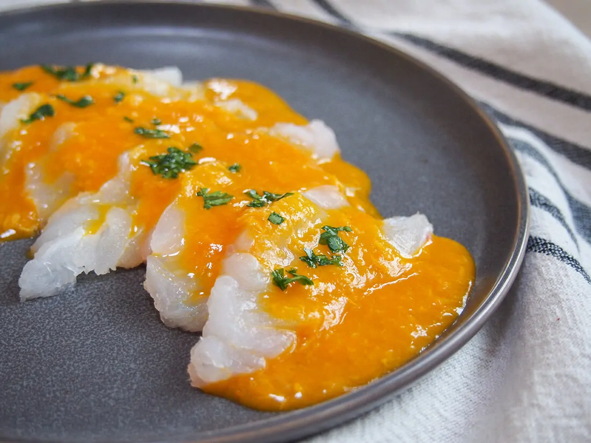
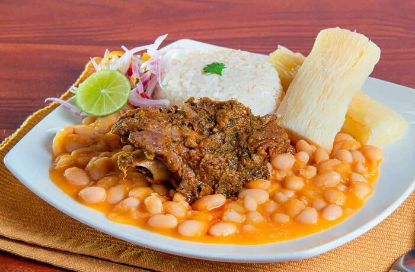
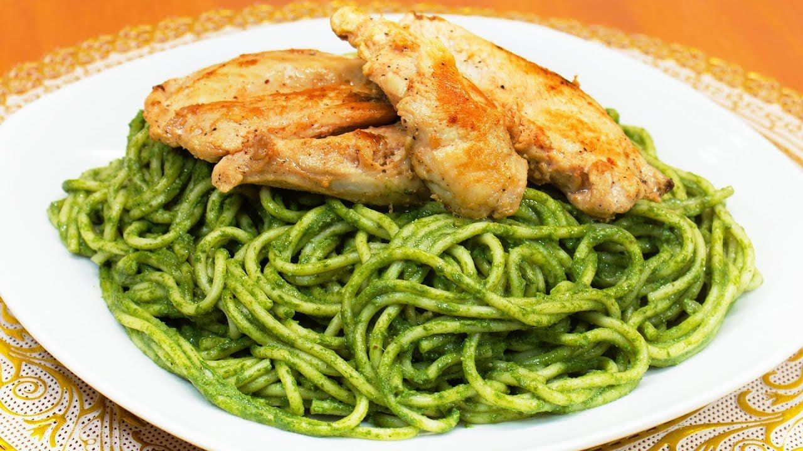
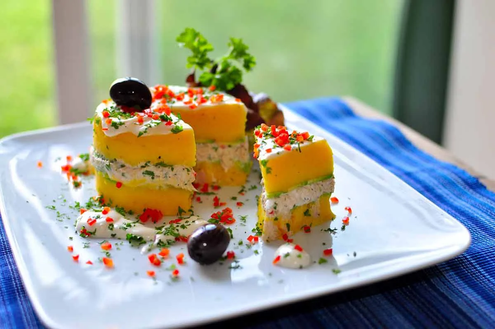
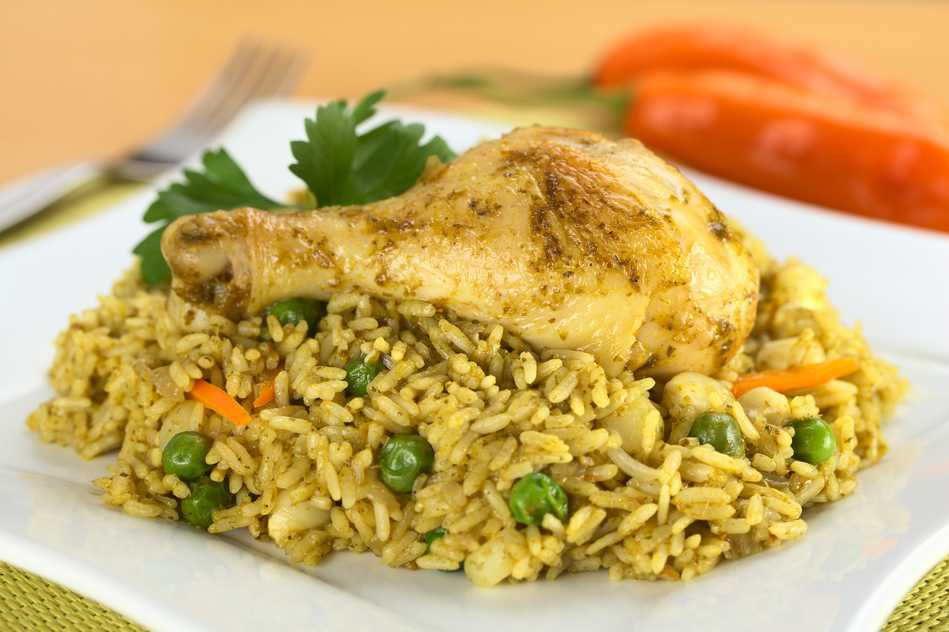
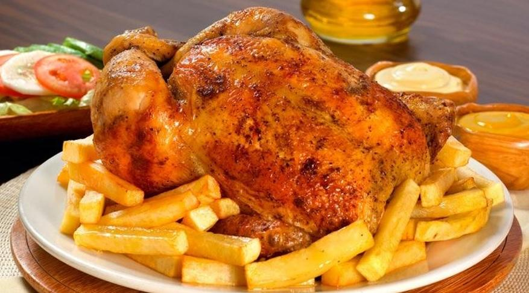
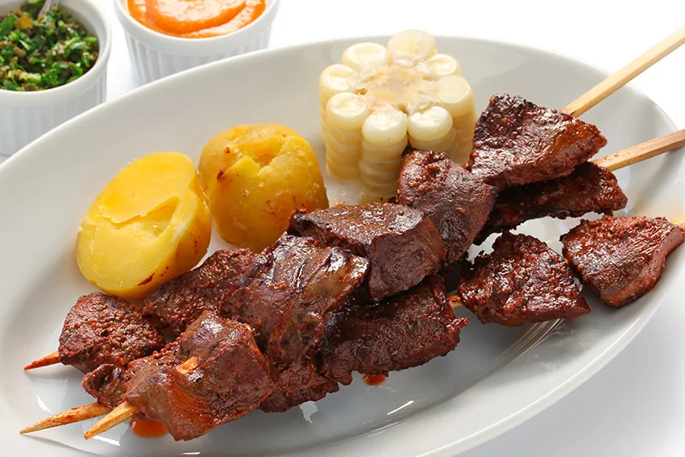
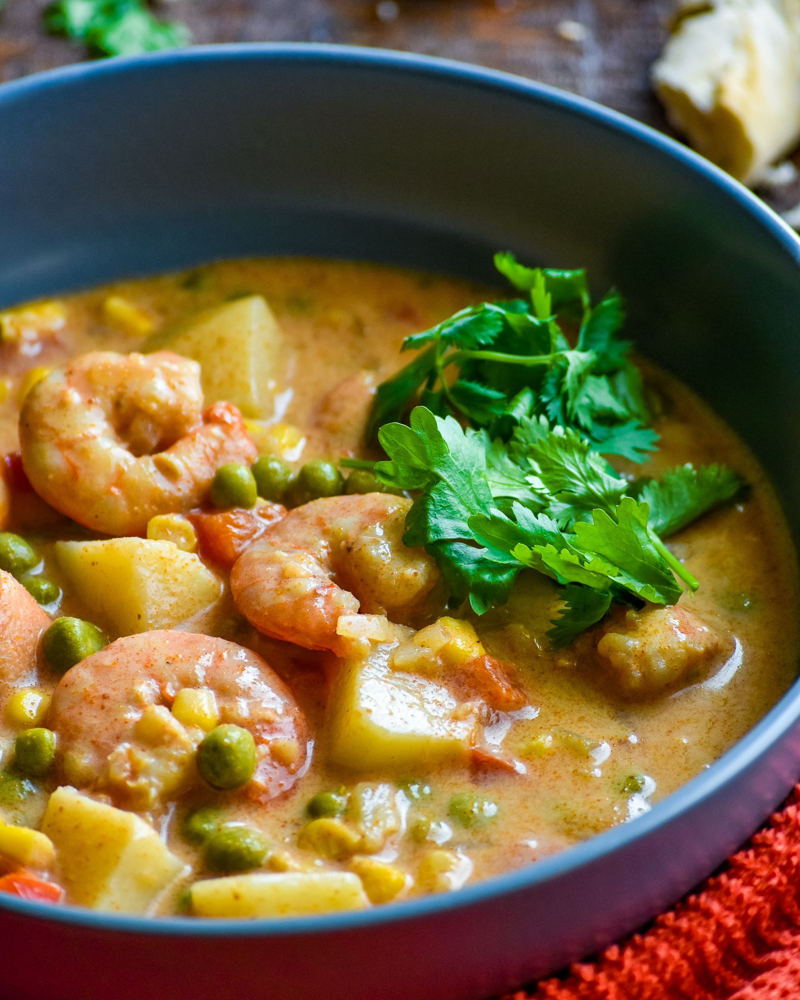
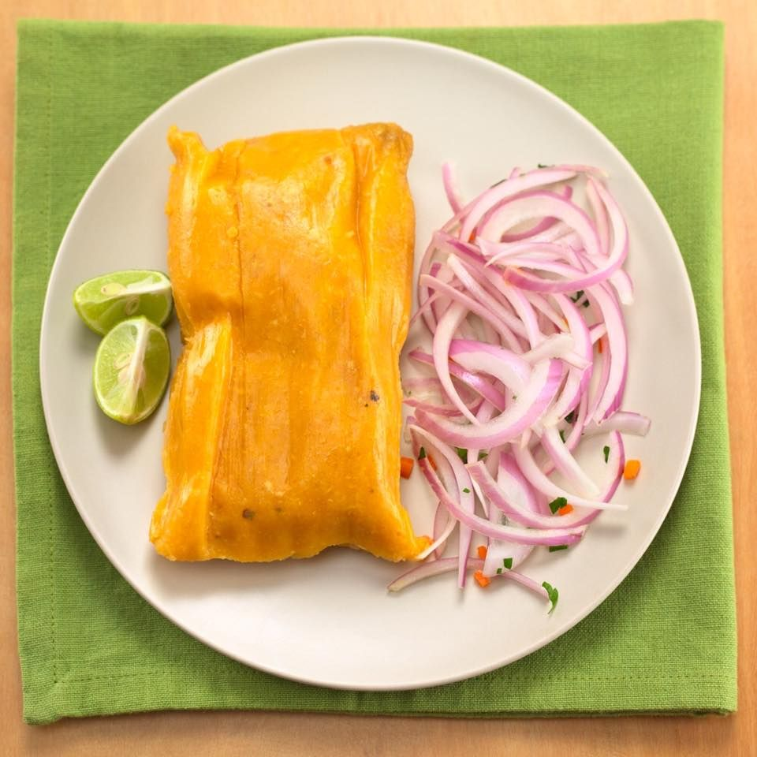
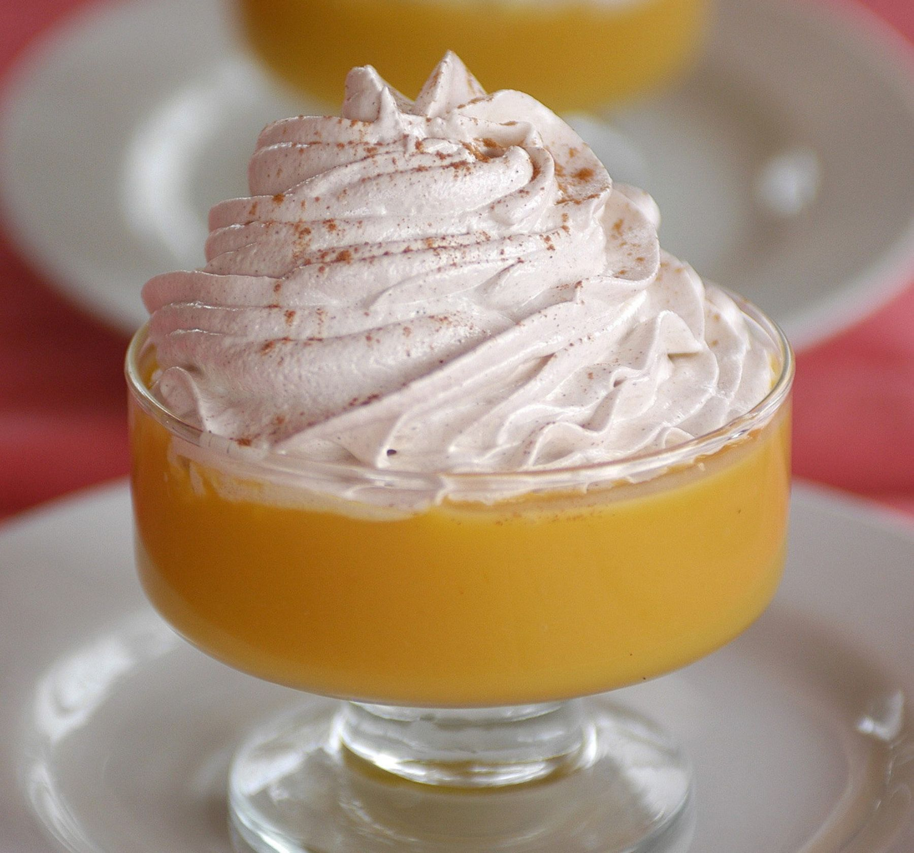

Hoy te compartimos los mejores platos típicos de la costa peruana, que demuestran al mundo entero cuan variado y rico es la gastronomía de este país.
La costa y su enorme variedad de platos son el icono de la gastronomía. El plato diario de los peruanos. La comida que llena el paladar de un país costero de sabor y tiene mucho que ofrecer y que lidera la gastronomía.
La costa peruana es bañada por las cálidas aguas del Océano Pacífico y dotada de más de 3.000 kilómetros de increíbles paisajes naturales, la costa peruana no sólo es conocida por su hermosa orografía y hermosas ciudades, sino que también es una parte importante de la cultura gastronómica del país, descubrir los platos típicos de la costa peruana.
Una comida rica en productos autóctonos que dan prioridad a una dieta saludable: La papa, el chile, la yuca, la mashua, la chirimoya, la batata, la quinua, el tarwi, los pallares y muchos otros alimentos forman parte de esta rica gastronomía alta en proteínas y baja en grasas.
En esta ocasión, le presentaremos los platos más deliciosos y característicos de la costa peruana. La fortuna gastronómica que enorgullece a todos los peruanos y que forma parte de su cultura gastronómica que lidera los rankings.
Estos son los platos típicos de la costa de Perú más conocidos:
Tiradito

El tiradito es un plato muy parecido con el ceviche, algunos lo consideran familiares cercanos. Se hace con pescado cocido en jugo de limón o limón como el ceviche, pero el pescado se corta en tiras finas (en el ceviche se corta en cubos) y no se utiliza cebolla.
El tiradito contiene rebanadas finas y largas de pescado fresco marinado en jugo de limón o limón, pimientos amarillos picantes y especias. Se suele adornar con maíz. Esta comida tiene una fuerte influencia japonesa.
Las variaciones modernas de este plato se sirven con una variedad de salsas, generalmente con ají o pimientos picantes.
Seco de Cabrito

Es un plato muy típico de la costa norte del Perú; básicamente es un guiso o guiso de carne de cabra tierna. Se suele cocinar en leña y tiene como acompañamiento una ración de frijoles, arroz y yuca tierna.
Es un plato muy común en esta región ya que la mayoría de la gente cría cabras. La cabra seca se suele cocinar en fiestas peruanas o en ocasiones especiales como bodas o cumpleaños.
Tallarines verdes

Los tallarines verdes es un plato donde el tallarín es de colore verde, el color le dan con la mezcla de ingredientes como el albahaca y las espinaca.
Son Tallarines hechos de leche evaporada, queso parmesano, albahaca, espinaca y nueces. Estos ingredientes forman la base de la característica salsa de fideos verdes.
Una comida de la costa que suele ir acompañada de algo de carne. La albahaca a parte de darle color le da un sabor fresco característico.
Jalea Mixta

La Jalea es un plato de la familia de los ceviches, y por esta razón podemos encontrarlo en casi todas las cevicherias.
Se sirve sobre una base de cebolla picada y yuca frita y se acompaña con chifle (chips de plátano) y rocoto. Normalmente se sirve con una salsa de jugo de limón, ají limo, cebolla, cilantro picado y choclo.
Causa limeña

Es un plato frío, preparado a base de papa blanca y amarilla, añadiendo aceitunas, cebolla, huevo y una cucharada de pimienta amarilla. Debe sazonarse con aceite, limón y sal al gusto.
Alternativamente, se puede preparar con aguacate. Se suele servir con algún tipo de vinagreta, ya que en combinación con la lima se realza su sabor.
Arroz con pollo

Un plato bandera que hace que los condimentos que se agregan le hagan único e inigualable.
Se prepara con carne de pollo, pimienta, pimiento amarillo y rojo, cebolla, ajo molido, guisantes y zanahorias. Una vez cocido el arroz, añadir el pollo previamente salteado a fuego alto en una sartén con sal, pimienta y un poco de comino para finalizar la cocción. Se acompaña con algunos trozos de perejil.
Pollo a la brasa

El pollo a la brasa es el plato más consumido por los peruanos, y es tan famoso que hay un día especial para celebrarlo (tercer domingo de junio).
Este plato es relativamente joven, creado a mediados del siglo pasado por el suizo Roger Schuler en su famoso restaurante La Granja Azul, ubicado en las afueras de Lima. Fue Schuler quien también inventó el sofisticado horno para prepararlos. Cincuenta años después de su nacimiento, el pollo a la parrilla se ha convertido en el plato más popular de la gastronomía peruana.
El pollo a la brasas es asado al carbón, leña o gas en un sistema rotativo, tiene condimentos que cada pollería tiene sus secretos.
Se sirve con papas fritas, ensalada, ají, y cremas a gusto, algunos lo acompañan con arroz chaufa simple.
Anticuchos

Los anticuchos son brochetas de corazón de ternera, sazonados con pimienta molida, varios dientes de ajo, vinagre de vino tinto, grano de achiote, comino, sal y pimienta al gusto. Todo se deja macerar durante 24 horas y luego se prepara en la parrilla.
Aunque hoy en día podemos encontrar anticuchos de varias carnes, como el pollo, choncholin (visceras de cordero).
Los anticucho son tan populares que podemos encontrar casi en cada esquina de las calles de Perú.
Chupe de camarones

El Chupe de Camarones es un plato típico de la costa del Perú.
El chupe de camarones es una plato peruana típico de la ciudad de Arequipa que se sirve en todas las picanterías de la ciudad. Además de estar muy difundido en el Callao y Lima, también se prepara en todo el país.
Es una sopa espesa y picante que tiene como principales ingredientes camarones de río, papas amarillas, queso fresco, leche, frijoles, arvejas, maíz, arroz y huevo, así como un aderezo a base de pimiento rojo y huacatay.
Tamal Limeño

Los tamales son variados en cada región del Peru, generalmente en Lima vienen rellenos de carne de cerdo o pollo, los favoritos del pueblo y envueltos en hoja de plátano y en hoja de maíz de provincia.
Suspiro a la limeña

Para cerrar esta lista de los mejores platos típicos de la costa Peruana tenemos al Suspiro a la Limeña.El suspiro de limeña, también conocido como suspiro limeño, es un postre tradicional de la gastronomía peruana que tiene su origen en la capital peruana.
El postre consta de dos partes, una de manjar blanco y una merengue.Se prepara de un manjar de yemas (inspirado en el manjar blanco) acompañado de un merengue italiano.
El manjarblanco para este postre se prepara con leche, azúcar, yema de huevo y esencia de vainilla, la yema de huevo aporta la consistencia característica.
El merengue tiene claras de huevo, vino de Oporto y azúcar. En un vaso se coloca generosamente la delicia blanca y se corona con merengue y muy poca canela en polvo.
La mezcla del sabor de ambos dulces es lo que caracteriza a este postre tradicional.